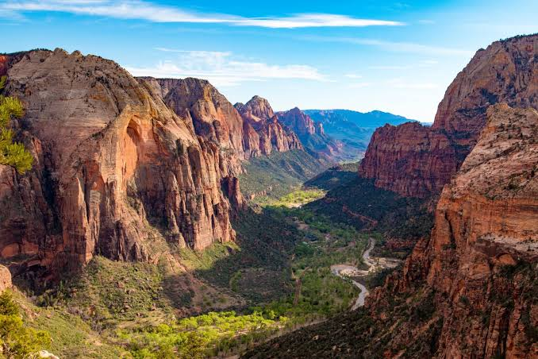

Utah ist ein Bundesstaat der Vereinigten Staaten von Amerika. Die Hauptstadt Utahs ist Salt Lake City. Die Abkürzung ist UT, der Beiname des Staates lautet The Beehive State (engl. beehive ‚Bienenkorb‘, ‚Bienenstaat‘, ‚Bienenstock‘). Der Beiname erklärt sich daraus, dass die gründenden Mormonen den Bienenkorb als Symbol des Fleißes zum Symbol des Staates bzw. Territoriums machten. Auch die neue Flagge stellt dieses Symbol sehr prominent zur Schau.[1] Weitere Staatssymbole sind die Möwe als Staatsvogel, die Kirsche als Staatsobst, der Allosaurus als Staatsfossil und der Colt M1911 als Staatswaffe. Utah war der erste Bundesstaat, in dem eine Waffe diesen Status bekam.[2]
Quellen- und Lizenzhinweis:
Dieser Text basiert auf dem Wikipedia-Artikel
Utah
(geänderte Fassung) und steht unter der Lizenz
Creative Commons Attribution-ShareAlike 4.0 International (CC BY-SA 4.0).
Das Bild ist von
USA Tipps